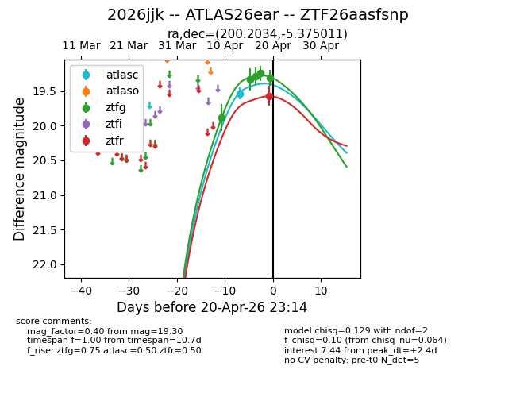
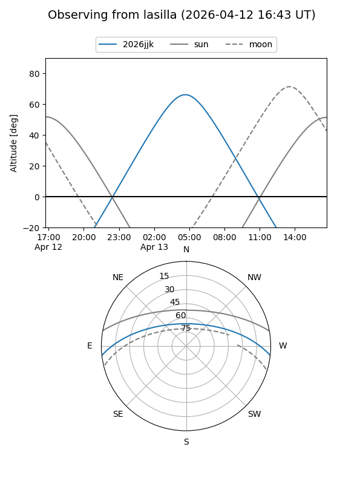
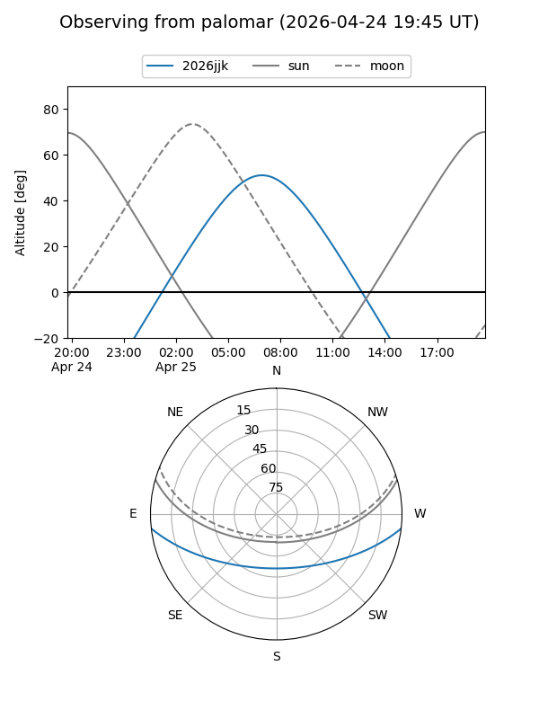
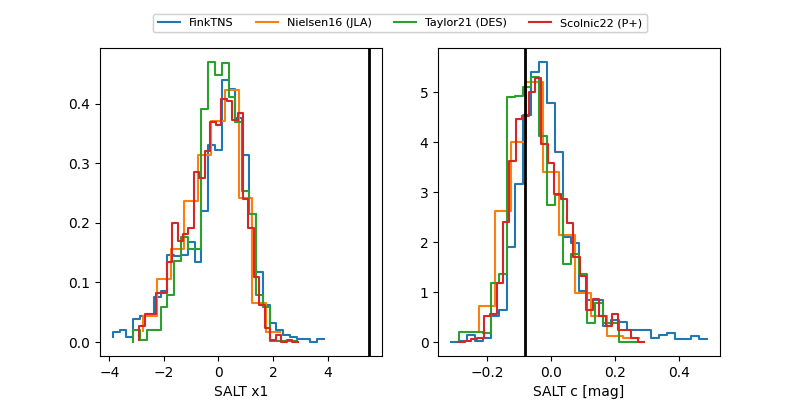

2026jjk
Target 2026jjk at 2026-04-20 23:19
Aliases and brokers:
FINK: link
Lasair: link
ALeRCE: link
TNS: link
YSE: link
alt names
ZTF26aasfsnp (ztf,fink_ztf)
2026jjk (tns,yse)
ATLAS26ear (atlas)
Coordinates:
equatorial (ra, dec) = 200.2034,-5.37501
equatorial (HMS+DMS) = 13:20:48.83,-05:22:30.04
galactic (l, b) = (316.3458,+56.72972)
Flags:
confirmed ia
Photometry:
last atlasc=19.53, ztfg=19.30, ztfr=19.57
1 atlasc, 5 ztfg, 1 ztfr detections
Lightcurve

Visibility


Additional plots
